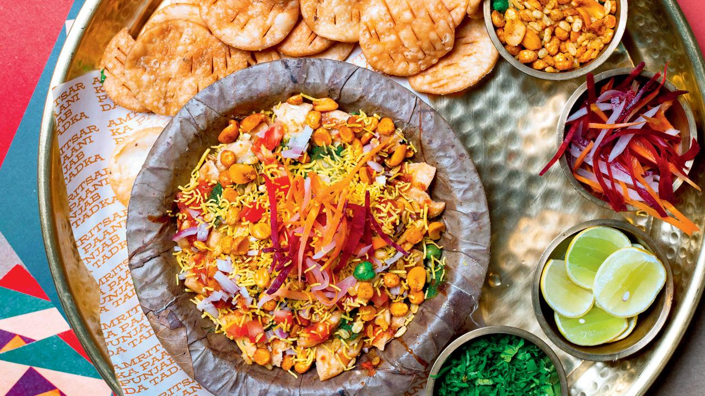
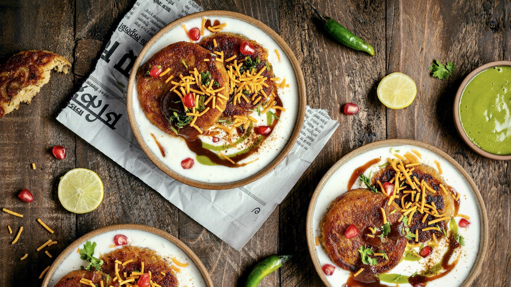

MENY
Papri Chaat
 55,-Papri Chaat er en populær nord Indisk/Pakistansk gatemat laget med papri (stekt ris-crispies, kokte kikerter, poteter, en varierende blanding grønnsaker, yoghurt og hjemmelaget chutney. M, F, Sd, Bd, S, Pn
Fruit Chaat
55,-En unik chaat oppskrift laget med kombinasjonen av fin-kuttet frukter. Den er så toppet med masala og pepper. M, Gl, Pn, Sl
Alo Tikki Chaat
 55,-Alo Tikki Chaat er moste og krydrede potet karbonader som er fritert. Potet karbonadene er så toppet med yoghurt, chutney, blandede grønnsaker, kikkerter og krydder. F, Bd, S, Pn, Sl
Vårrull m/ Kylling
10 ,- pr stkDisse kylling vårrullene er fylt med kylling og fin-kuttet grønnsaker som er saltet og krydret. E, Pn, Sl
Vårrull m/ biff
 55,-
55,- Disse biff vårrullene er fylt med biff og fin-kuttet grønnsaker som er saltet og krydret. M, F, E
Kylling Sandwich
15 ,- pr stkRullet kylling som er revet og blandet med majones, grønn chili, grønn kålløk og salt. Den er så plassert mellom 2 burgerbrød. (Kan fåes med biff) M, Gl, S, Pn, Sl
Pani Puri
 55,-
55,- Pani Puri består av sprø, stekte deigkuler (puri) fylt med kokte poteter, sammen med krydret syrlig vann og en søt chutney. M, F, Sd, Sl
Dhai Bhalla
55,-Dhai Bhalla er en type chaat tilberedt ved å bløtlegge "vadas" (stekte blomster baller). Det kuttes så grønnsaker som krydres og helles thik dhai (yoghurt) over. M, F, E, Sd